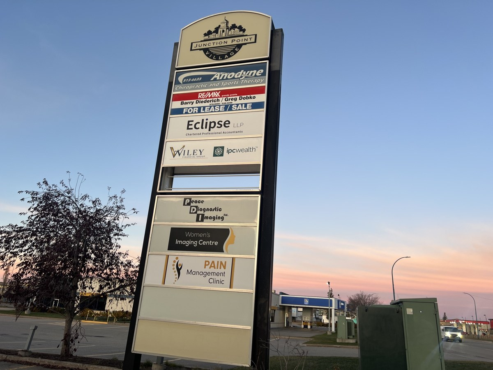

Beyond your front door.
A dedicated roadside panel gives your business name and logo a place people can spot as they pass.
Sign space · Grande Prairie
Junction Point Village
Northridge Business Centre
Grande Central Station
Your selected spot
Or call 780-978-1290

Standard 2′ × 8′ panel · Both sides
Includes both sides of one standard panel space. Contact us for current pricing and details about combined spaces, artwork, and installation.
A dedicated roadside panel gives your business name and logo a place people can spot as they pass.
Help first-time customers and clients recognize the property when they come to visit.
Sign space is for businesses located within the corresponding development. Open the page for the development where your business is located.
Let’s get you on the sign
Tell us your business name and when you’d like your signage to go up. We’ll discuss current availability, lease pricing, panel dimensions, artwork, and installation for your chosen spot.
Our signs use backlit panel designs. Ask about artwork and installation for the panel you’re interested in. Availability and lease details are confirmed with your inquiry.